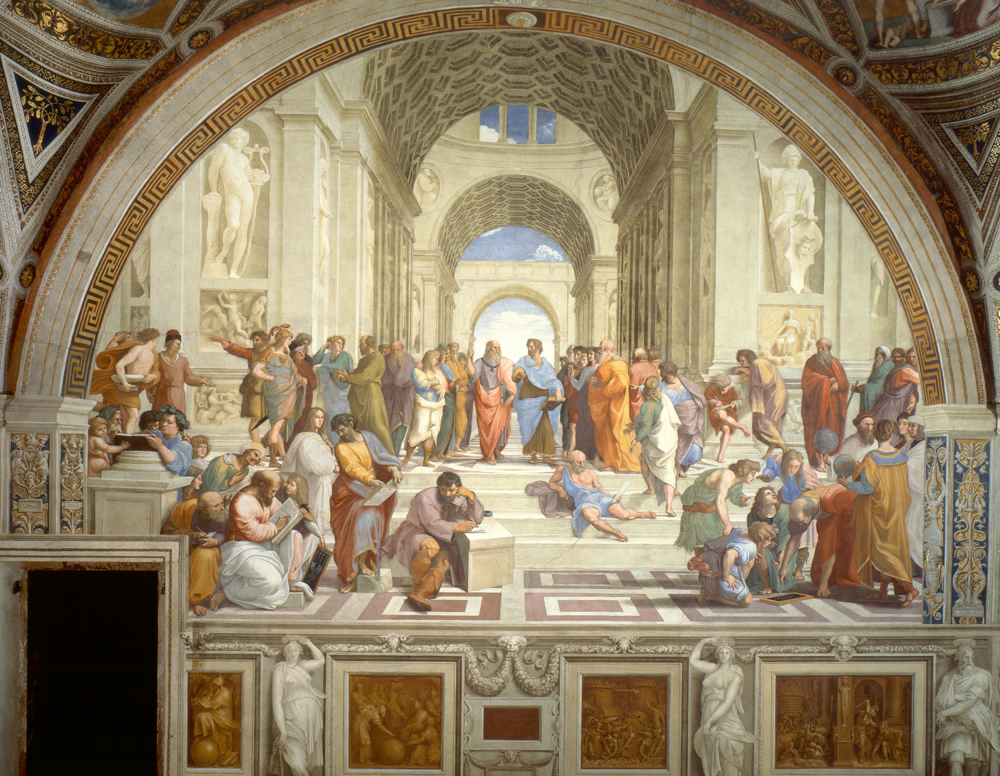

Bachelor's Degree
The foundational course in drawing and painting, grounded in the academic study of form, light, anatomy and composition.
Read moreThe first institution in Italy to carry forward the Classical Renaissance traditions in figurative art — drawing, painting and restoration, in the historic heart of Florence.
The Academy has never changed its purpose: to train talented artists. From the very beginning, the foundation of this education has been a harmonious, methodical system — one that has grown and improved to reflect the needs of each age.
We give versatile, deep knowledge that enables our students to find their own artistic voice and work in every direction, from the classical to the contemporary. Our academic course in Drawing, Painting and Restoration is built upon the original program of the leading universities of Russia — recognised and esteemed worldwide.
Our disciplines & method
Didactics built on the accredited Russian state program in Culture and Art, joined with a modern European academic approach.
A guaranteed grounding in the fundamentals — knowledge that can be applied with confidence in modern and contemporary art.
A great quantity of practical work and assignments — because mastery is earned at the easel, not only in theory.
Set at the northernmost point of Florence's historic centre, among the 19th-century Viali di Circonvallazione.
A dedicated library and wireless connection throughout the academy's premises, open to every student.
Our staff assists with finding accommodation and provides administrative support to students from abroad.
From first principles of drawing to the doctoral study of restoration — a continuous, classical education.
The foundational course in drawing and painting, grounded in the academic study of form, light, anatomy and composition.
Read moreA second-level program for artists ready to deepen their craft and develop a mature, personal voice.
Read moreAdvanced research and practice at the highest level, for those who will carry the tradition forward as masters.
Read more«The Academy gives versatile, deep knowledge — so that each student may develop a voice of their own.»The International Academy of Art · Florence